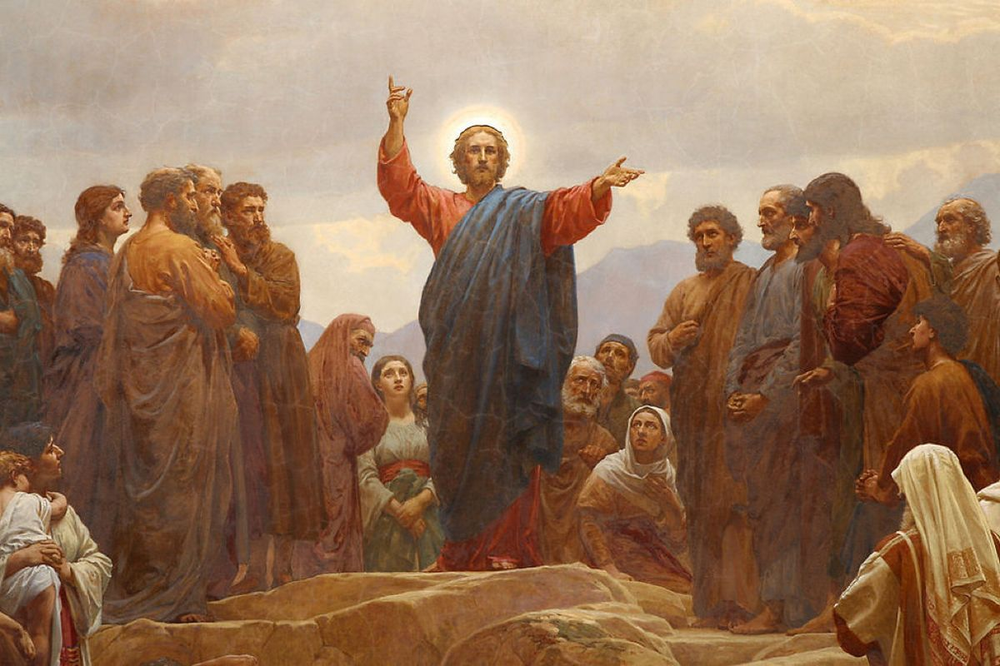
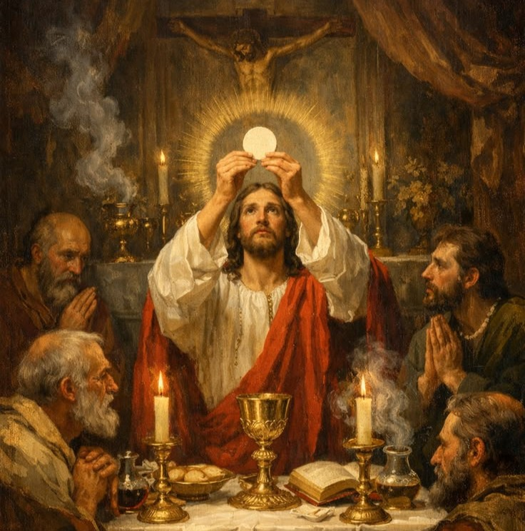
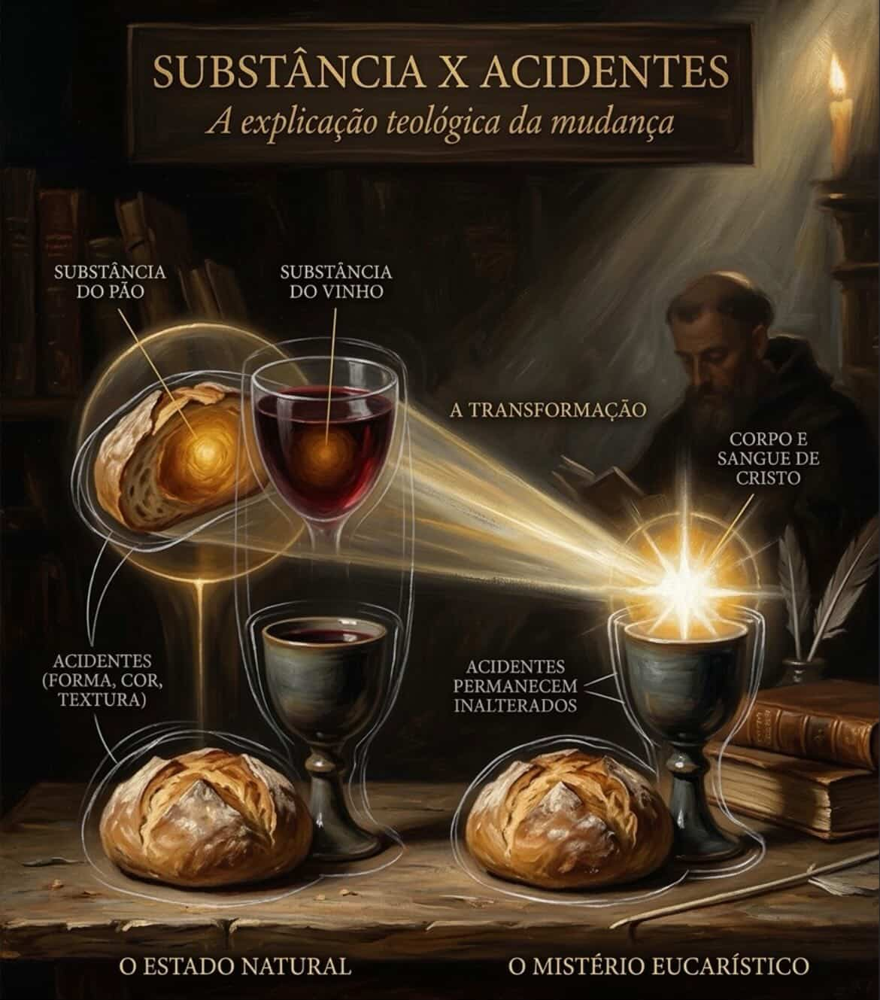
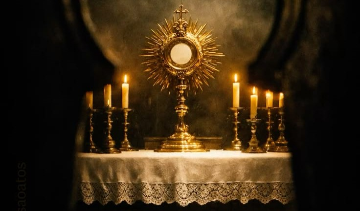

Q
uando olhamos para um pedaço de pão e uma taça de vinho sobre o altar, nossos olhos nos dizem uma coisa, mas a nossa fé nos revela outra completamente diferente. Ao longo dos séculos, muitos se perguntaram: será que Jesus estava falando metaforicamente? Será que a Eucaristia é apenas uma lembrança afetuosa da Última Ceia?
Para encontrar essa resposta, precisamos voltar às margens do Mar da Galileia. Jesus já havia multiplicado os pães e os peixes, saciando a fome física de milhares. Mas Ele queria ir além. Ele queria saciar a fome da alma.

"O pão que eu darei é a minha carne. [...] O meu sangue é verdadeira bebida." — João 6, 51.55
As palavras foram duras. Muitos de seus seguidores o abandonaram naquele dia por não compreenderem como Ele poderia dar a própria carne para comer. Jesus, no entanto, não voltou atrás. Ele não disse "esperem, é apenas um símbolo". Ele manteve a sua palavra, preparando o terreno para o que aconteceria na véspera de sua Paixão.
O Milagre do Cenáculo
Na Última Ceia, o mistério finalmente se concretizou. Cristo, segurando o pão ázimo, não disse "isto representa o meu corpo". Com a autoridade do próprio Deus, Ele pronunciou palavras de transformação.

"Isto é o meu corpo, que é dado por vós. [...] Este cálice é a Nova Aliança em meu sangue." — Lucas 22, 19-20
Como isso é possível? (Substância vs. Acidentes)
Para explicar como o pão e o vinho se tornam Corpo e Sangue sem mudarem de aparência, a Igreja utiliza um conceito filosófico brilhante chamado Transubstanciação.
Tudo o que existe possui duas realidades: a sua Substância (o que a coisa realmente é em sua essência) e os seus Acidentes (como a coisa se apresenta aos nossos sentidos: forma, cor, cheiro, gosto, textura).

A explicação teológica da mudança eucarística.No momento da consagração, pelo poder do Espírito Santo e pelas palavras do sacerdote, ocorre um milagre invisível: a Substância do pão e do vinho deixa de existir, sendo totalmente substituída pela Substância do Corpo, Sangue, Alma e Divindade de Cristo.
No entanto, os Acidentes (o gosto do trigo, a cor do vinho, a textura) permanecem inalterados. É por isso que os seus sentidos dizem que é pão, mas a sua alma sabe que é Deus. É a realidade mais profunda escondida sob o véu da simplicidade.

É exatamente para fortalecer essa fé, que às vezes vacila diante de algo tão grandioso, que Deus permitiu, ao longo dos séculos, os Milagres Eucarísticos. Momentos raros e extraordinários onde Ele permite que até mesmo os acidentes se transformem, mostrando carne humana e sangue visíveis para atestar o que sempre esteve lá: Ele mesmo.